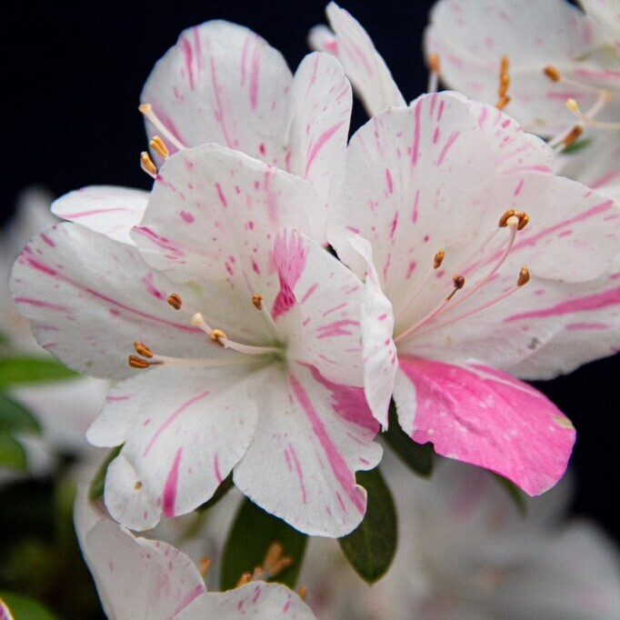

-
杜鵑
學名：Rhododendron simsii Planch
-
校園分布：
清園、公車亭、中正大道北端、共教大樓北側、禮堂前廣場
-
開花月份：
3月 - 5月(Mar - May)
植物簡介
原產地位於喜馬拉雅山區，中國長江流域及西南部各省地區，日本本州一帶；臺灣於 1900 年代引進種植。生於海拔 500~1,200(~2,500) 公尺的山地疏灌叢或松林下，為中國中南及西南典型的酸性土指示植物。
杜鵑花品系繁多。枝條平滑，有粗毛或腺毛。杜鵑花的根系分布很淺，喜歡偏酸性的土壤，能與土中的真菌共生，這些共生的真菌可以分解有機質供杜鵑花使用。葉形多變，有橢圓形、卵形、披針形、倒卵形等，全緣，有些有密度不一的毛茸，有些則光滑無毛葉單生無托葉，大多為互生；常綠或少數落葉。雄蕊數目同花冠裂片或多 2 倍，花絲離生，花藥 2 室，先端呈尾狀，頂孔開裂花，萼 4~7 裂，殘存，花冠 4~7 裂，大多數為 5 裂，花兩性、單生；總狀花序或圓錐花序；花冠為漏斗形或闊鐘形子房上位、數室，胚珠多數，花柱單生。果實有蒴果、核果或漿果。種子較小，有肉質的胚乳及直立的胚，有時有翅。
